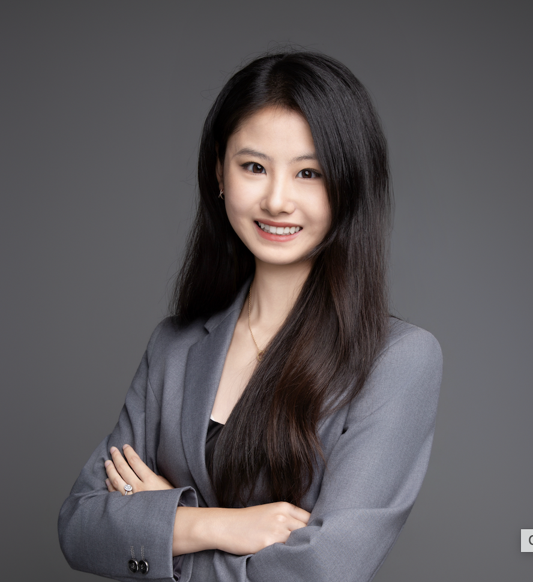

Tianwei Jiang
Ph.D. student · Electrical and Computer Engineering · Georgia Tech
About
I am a Ph.D. student in Electrical and Computer Engineering at Georgia Tech. I earned a B.S. in Audio and Music Engineering and a B.A. in Mathematics from the University of Rochester.
My research interests include audio perception, sound event detection, sound source localization and spatial audio, audio-visual learning, and multimodal machine learning. I am especially interested in audio-centered systems that work reliably in real-world settings.
Outside research, I love K-pop and play piano, classical guitar, and drums. I also enjoy badminton, tennis, and skiing.
Education
Georgia Institute of Technology
University of Rochester
Employment
Graduate Research Assistant · Georgia Institute of Technology
Research in audio-visual localization, bioacoustics, and multimodal analysis of speech and behavior.
Audio Software Engineer Intern · Dolby Laboratories
Worked on sound source elevation and spatial audio, including binaural features, ear-shape analysis, and localization algorithms.
Audio Lab Engineer · Agora Inc.
Developed audio quality evaluation and automated testing systems for mobile and embedded platforms.
Selected Papers
- “Human-in-the-Loop Active Learning for Rare Poultry Vocalization Discovery in Long-Term Farm Recordings.” IEEE MLSP 2026, published.
- “Modality Compensation via Explicit Audio-Visual Correspondence for Multi-Source Sound Localization.” Submitted to ICASSP 2027.
- “Automatic Discovery of Mixed Call Types and Soft-Label Learning for Pekin Duck Vocalization Classification.” Submitted to ICASSP 2027.
- “Generalizable HRTF Elevation Modeling Using Relative Binaural Magnitude and Group Delay.” With Dolby Laboratories; submitted to ICASSP 2027.
- “Elevated Sources and HRTFs: A Boundary Element Study of Ear Shape and Spectral Cues.” With Dolby Laboratories; under review at JASA.